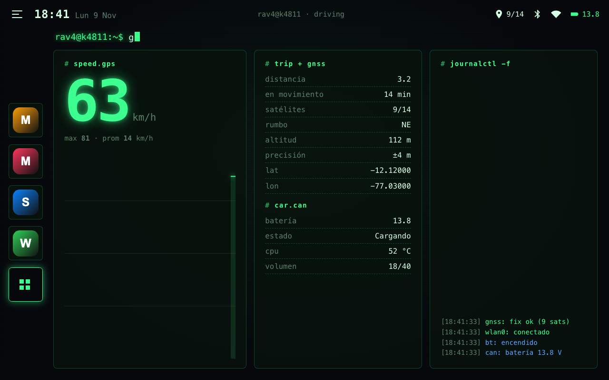
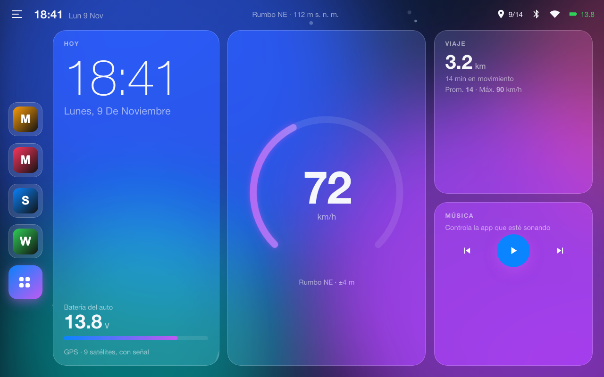
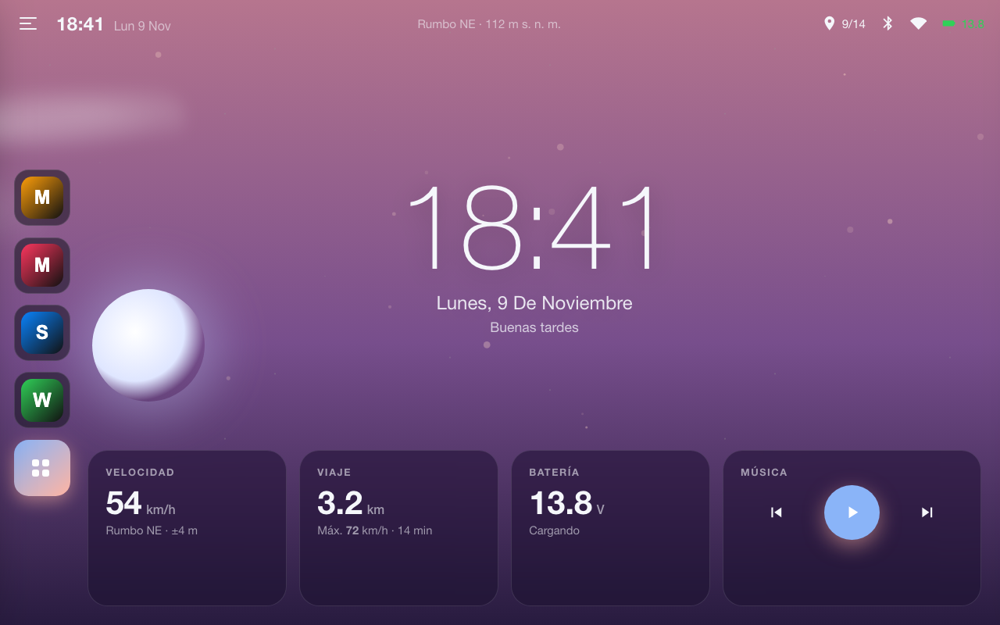
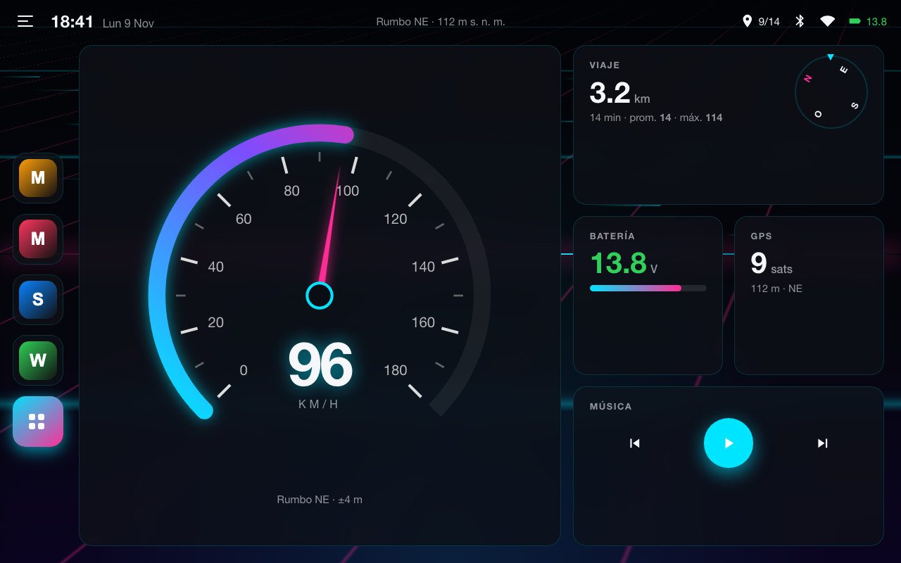
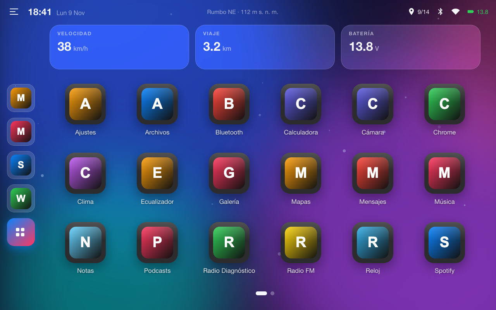
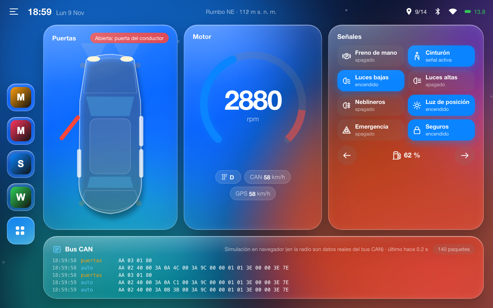
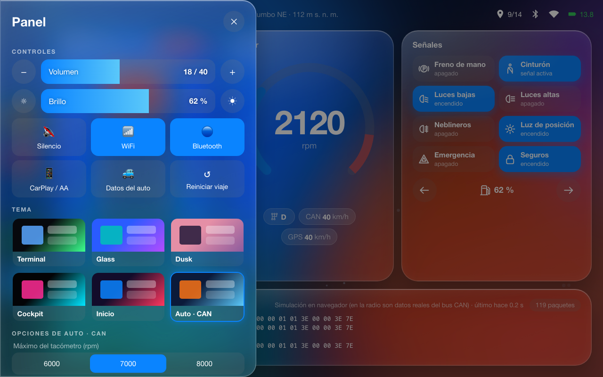

Una pantalla de inicio hecha a medida para la radio del auto: velocidad y viaje por GPS, voltaje de la batería por CAN, volumen real de la radio, 6 temas animados y configurables, lectura del bus CAN y actualizaciones desde GitHub.

Efecto CRT, comandos que se teclean solos y log en vivo del GPS, WiFi y CAN.

Tarjetas de vidrio sobre una aurora animada y anillo de velocidad.

El cielo cambia con la hora real: sol, luna, nubes y estrellas.

Velocímetro con aguja, brújula y carretera neón que corre con el auto.

Íconos grandes en páginas, con widgets de velocidad, viaje y batería.

Vidrio líquido estilo iOS: puertas, RPM, luces y el bus CAN en vivo.

Volumen, brillo, tema y sus opciones, modo oscuro por horas, acento y actualización.
GPS a 2 Hz: velocidad, máxima, promedio, distancia, rumbo y altitud.
Voltaje leído por el bus CAN de la radio, con aviso de carga o batería baja.
Usa el sistema de volumen propio de NWD (0–40), descubierto descompilando el firmware.
Nunca baja del 18 %, porque por debajo la pantalla de esta radio se apaga.
Cada push publica un APK firmado; el launcher lo descarga e instala encima.
Desinstala apps del sistema con el servicio root del firmware, con lista de protegidas.